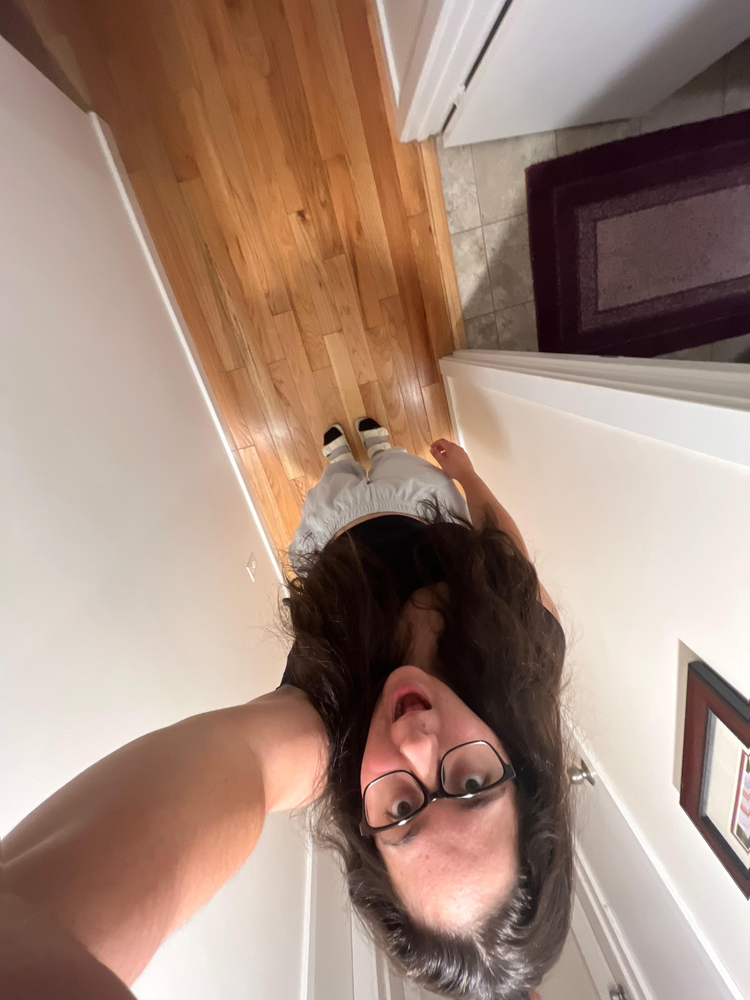
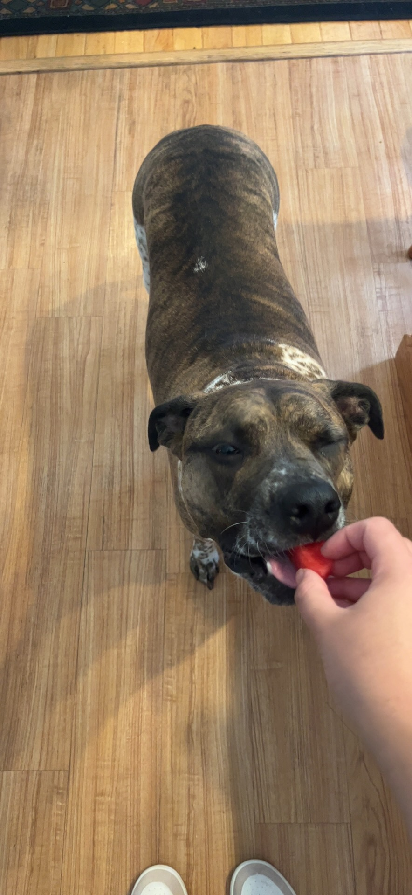

My name is Alyssa Forman, and all of my life I have loved to create things. From a young age, I have loved working with my hands. I grew up drawing, painting, and coloring. I used to make stop motion animation with my toys and steal my mom's phone to make movies. I taught myself how to create games on a busted computer that sounded like it would explode at any second. I also loved to cook and would spend all of my birthday money on legos and robot kits. I taught myself how to build computers and so much more random hobbies. As I grew older and was asked what I wanted to be when I grew up I never knew what to say. There were too many things that I loved to pick just one. My dream job changed every single day. Once I got to middle school and high school I thought the only way to be successful would be to give up on art and creating. However, I have come to realize that not only is design everywhere but you can be successful in any design field. My biggest dream in life is to create something that the whole world can enjoy.
I am very excited to learn how to code in HTML. In fact I almost majored in Computer Science, until I found out about UX Design. In highschool I was taught HTML but it was using outdated methods that arent taught anymore. To me coding is one big puzzle and it is so satisfying to me. I find it so satisfying to craete something from scratch and making into something functinal. While it is aggrivating I enjoy going from struggeling to having an end project I can be proud of. As I further my carrer I want to get a certificate in a maybe a couple of coding languages. Although, I am not sure which ones I would want to learn. I know for sure I want to master HTML.
Music is something I am constiantly listening to. It helps me relax, it makes me feel mad, sad, it makes me feel all sorts of emotions. When creating I always listen to music. It helps me get in the right headspace when designing. I don't really have a favorite artist or genre. What I listen to depends on my mood. I typically listen to alternative/ indie music, however it ranges to from country to rap. Below is a link to my spotify profile if you want to listen to what I listen to it.
check out my spotify
Here is my dog
| Dogs | Cats | Turtles | Frogs | Hamsters | Lizards |
| Tess | Pazz | Franklin | Bella | Oreo | Freddy |
| Rocky | Jake | Ray | Snickers | ||
| Ariel |